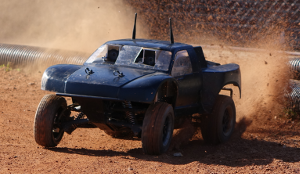

Check out the project's site.
AutoRally
An RC-scale autonomous racecar from Georgia Tech's Wall Lab. Under the direction of Dr. Jim Rehg and Brian Goldfein, I've worked on everything from hardware design to track perception.Check out the project's site.

VEX Shield for Arduino
This is an Arduino shield I've designed for making it easier to interface with VEX electronics (servos, sensors, etc.) from an Arduino microcontroller.
RoboJackets
I am currently the Treasurer for the RoboJackets and work on software for several of the competition teams.Find out more here.
Seekur Jr.
This project is from my internship at GTRI ELSYS in 2012. The project uses a kinect to autonomously map and navigate its environment.
SPOT
This is a work in progress. It's an experiment in computer vision. The rover uses a webcam and on-board computer to chase balls and avoid crashes.See more here.

Crowd Traffic
A mobile Android application that uses data from other app users to build a live map of traffic. Built during an internship at GSU's Sensorweb Research Laboratory.Band Promo
This is a video I made to promote Marist's marching band. This was my first major After Effects project.